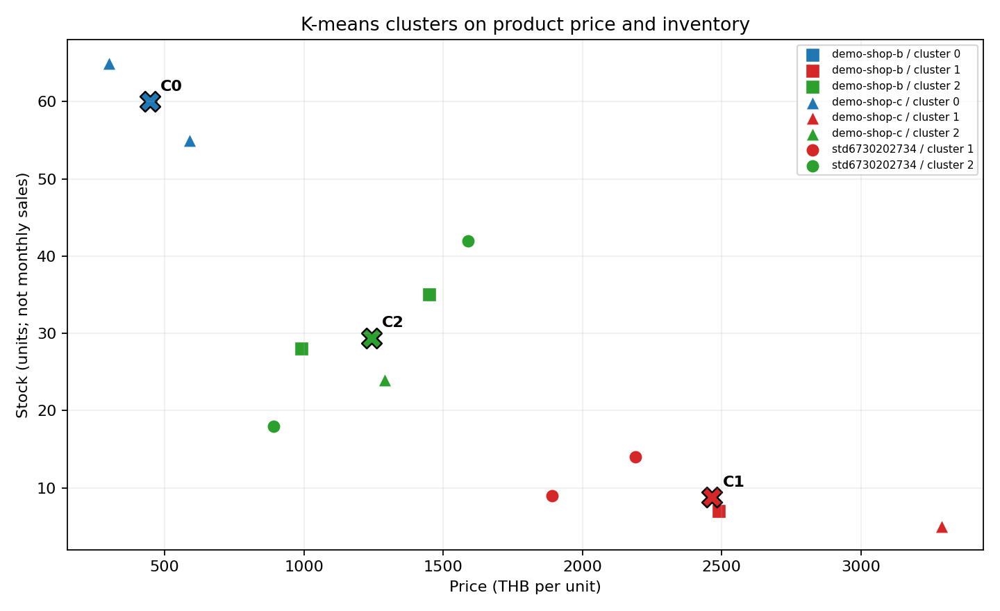
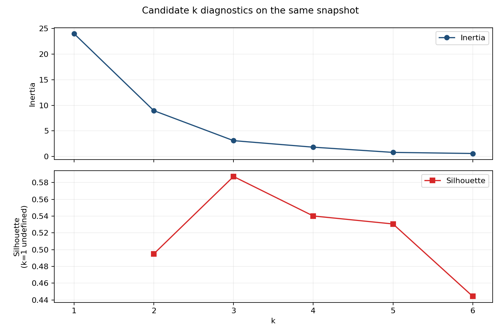

Product K-means: price + inventory
8 rows from the two simulated-group APIs are classroom data. The HTTP calls and K-means run are live; only the TA catalog is original data.
Matrix
12 × 2
Selected k
3
Inertia
3.094
Silhouette
0.587
1. Input vectors and learned memberships
Each row is one vector [price, stock]. Source/category/ID are shown for provenance and were not model features.
| Cluster | Source | Product ID | Name | Price (THB) | Stock | Price source |
|---|---|---|---|---|---|---|
| C0 | Simulated group B | B-001 | Wireless Mouse | 450 | 60 | api |
| C0 | Simulated group C | C-002 | LED Desk Lamp | 590 | 55 | api |
| C0 | Simulated group C | C-001 | Study Notebook Set | 300 | 65 | api |
| C1 | Simulated group B | B-004 | Full HD Webcam | 2,490 | 7 | api |
| C1 | Simulated group C | C-004 | Ergonomic Office Chair | 3,290 | 5 | api |
| C1 | TA | pixel-rush-hoodie | Pixel Rush Hoodie | 1,890 | 9 | api |
| C1 | TA | static-runner | Switch Move Runner | 2,190 | 14 | api |
| C2 | Simulated group B | B-002 | Mechanical Keyboard | 1,450 | 35 | api |
| C2 | Simulated group B | B-003 | USB-C Hub | 990 | 28 | api |
| C2 | Simulated group C | C-003 | Bluetooth Speaker | 1,290 | 24 | api |
| C2 | TA | acid-grid-tee | Acid Grid Tee | 890 | 18 | api |
| C2 | TA | signal-cargo | Signal Cargo | 1,590 | 42 | api |
2. Price/stock scatter and centroids

Colours are learned cluster IDs; marker shapes are API sources. C0/C1/C2 are arbitrary IDs, not ranks.
3. Centroids in original units
| Cluster | Members | Mean price (THB) | Mean stock (units) |
|---|---|---|---|
| C0 | 3 | 446.67 | 60.00 |
| C1 | 4 | 2,465.00 | 8.75 |
| C2 | 5 | 1,242.00 | 29.40 |
4. Candidate k diagnostics

| k | Inertia | Silhouette | Realized clusters |
|---|---|---|---|
| 1 | 24.0000 | undefined | 1 |
| 2 | 8.9570 | 0.495 | 2 |
| 3 | 3.0941 | 0.587 | 3 |
| 4 | 1.8169 | 0.540 | 4 |
| 5 | 0.7985 | 0.531 | 5 |
| 6 | 0.5826 | 0.444 | 6 |
Silhouette is an internal clustering diagnostic, not classification accuracy. Inspect membership and singleton/outlier clusters before choosing k.
5. Interpretation limits
This small snapshot demonstrates normalization, vectors, scaling and K-means. Cluster membership does not prove demand, popularity, turnover, profit or a reorder decision. Stock is inventory, not monthly sales.